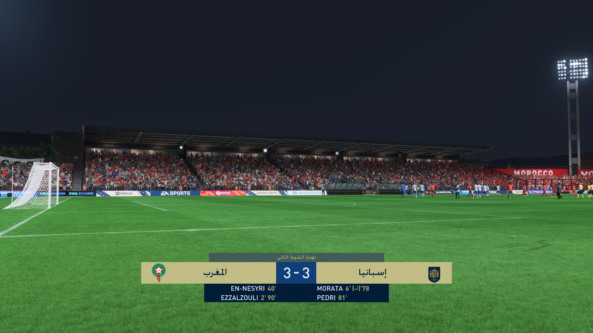
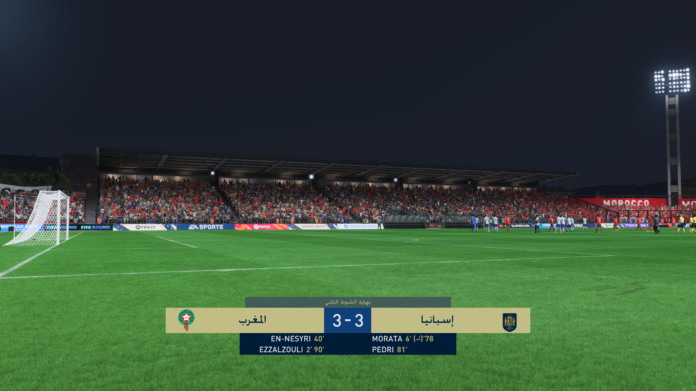

games info
date:10 november 2023
fifa23
Exploring the Excitement: FIFA 23
Introduction:
The world of football gaming is about to undergo a transformation with the impending release of FIFA 23. As fans eagerly await the latest edition, expectations are running high for what promises to be a groundbreaking experience. This article delves into the anticipated features, improvements, and the overall excitement surrounding FIFA 23
FIFA has long been celebrated for its realistic gameplay, and FIFA 23 is expected to take it to unprecedented heights. From enhanced ball physics to more realistic player movements, the game is poised to offer an immersive and authentic football experience. The developers have been working tirelessly to ensure that every match played feels like stepping onto a real football field.
Cutting-Edge Graphics and Animation:
A major highlight of each new FIFA release is the improvement in graphics and animation, and FIFA 23 is no exception. With advancements in technology, players can anticipate visually stunning graphics, lifelike player expressions, and meticulously detailed stadiums. The visual feast is expected to contribute significantly to the overall gaming experience.
Innovative Game Modes:
FIFA 23 is likely to introduce innovative game modes, catering to a wide range of players. Whether you're a career mode enthusiast, a fan of online play, or someone who enjoys the thrill of street football, FIFA 23 is expected to have something for everyone. Stay tuned for details on new and revamped game modes that will keep players engaged for hours on end.
Player Ratings and Transfers:
One of the most exciting aspects for fans is the unveiling of player ratings and the much-anticipated transfers within the game. As real-world football evolves, so does FIFA, with updates reflecting the latest player performances and transfers. Who will be the top-rated players in FIFA 23, and which clubs will dominate the virtual pitch? The gaming community eagerly awaits these revelations.
Enhanced Multiplayer Experience:
FIFA's multiplayer experience has always been a cornerstone of its success. FIFA 23 is expected to build on this, offering improved online modes, cooperative play, and potentially new features that will allow players to connect and compete in more ways than ever before. The camaraderie and competition of multiplayer gaming are set to reach new heights.
Conclusion:
As the release date of FIFA 23 draws nearer, the excitement among fans continues to escalate. With promises of groundbreaking gameplay, cutting-edge graphics, and innovative features, FIFA 23 is shaping up to be a must-have for football gaming enthusiasts. Keep a close eye on announcements and teasers for the latest updates, and get ready to immerse yourself in the next chapter of virtual football.


 
